Mise en place d'une stratégie de sauvegarde automatisée (Windows Server Backup)
Présentation
Afin de finaliser le durcissement de mon infrastructure virtuelle, j'ai mis en œuvre un Plan de Reprise d'Activité (PRA) pour le serveur hébergeant mon annuaire Active Directory et mon serveur de fichiers.
L'objectif de cette réalisation était d'assurer la résilience de l'entreprise face aux risques (crash matériel, ransomware) en provisionnant un stockage physique indépendant et en automatisant la sauvegarde de l'état du système.
Environnement technique et Architecture
Hyperviseur : VMware Workstation Pro
VM serveur : Windows Server 2022 (SRV-AD01)
Rôles protégés : AD DS, DNS, Serveur de fichiers centralisé
Outil utilisé : Windows Server Backup (Fonctionnalité native)
Expansion et provisionnement du stockage physique
J'ai procédé à l'arrêt propre du contrôleur de domaine SRV-AD01 afin de modifier ses ressources matérielles au niveau de l'hyperviseur VMware.
Dans les paramètres de la machine virtuelle, j'ai ajouté un second disque dur virtuel indépendant (NVMe) avec une allocation de 20 Go, dédié exclusivement aux archives de sauvegarde. J'ai ensuite redémarré le serveur pour que ce volume soit détecté par l'OS.
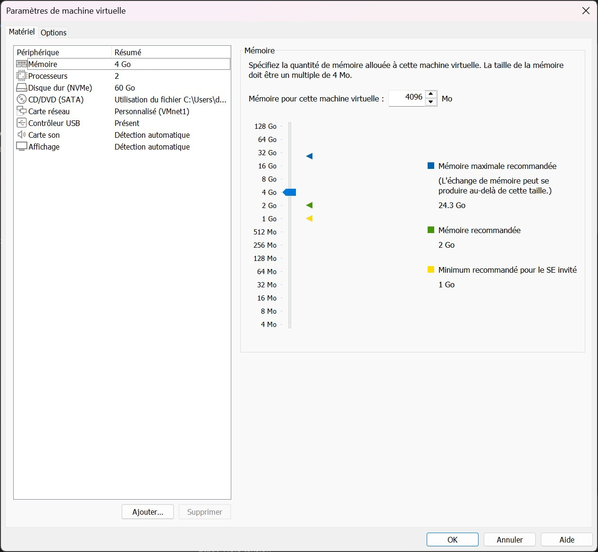
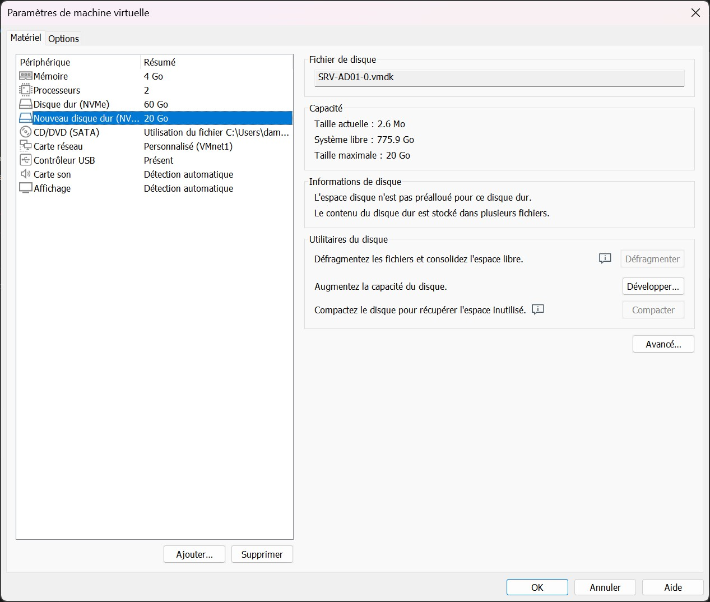
Déploiement de la fonctionnalité sécuritaire
J'ai ouvert une session d'administration sur le serveur SRV-AD01 et j'ai démarré le Gestionnaire de serveur.
Via l'assistant d'ajout de rôles et de fonctionnalités, j'ai localisé et installé la fonctionnalité native Sauvegarde Windows Server (Windows Server Backup). J'ai validé le déploiement et attendu la confirmation de succès.
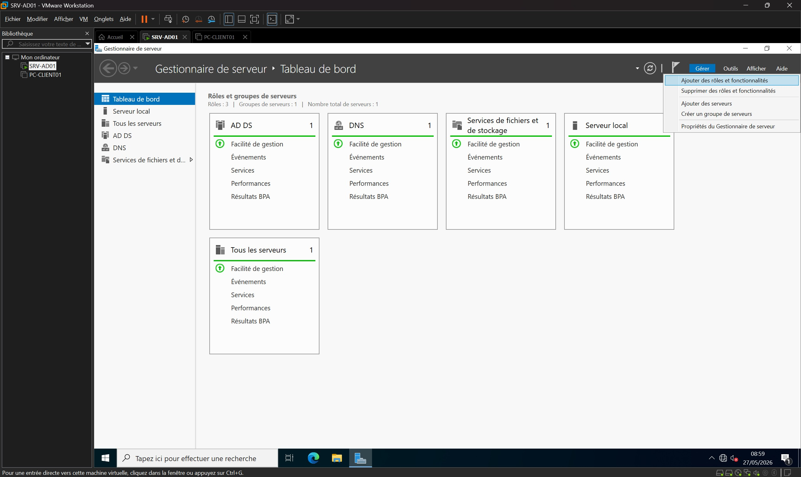
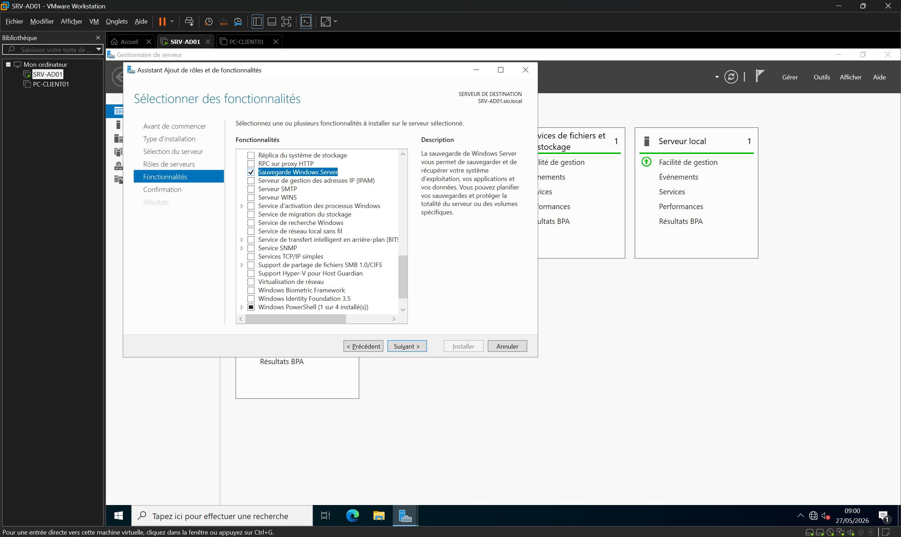
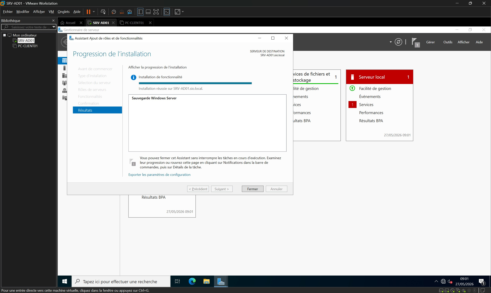
Architecture et planification de l'automatisation
Dans le Gestionnaire de serveur, j'ai cliqué sur Outils pour lancer la console d'administration Sauvegarde Windows Server.
J'ai configuré une planification personnalisée quotidienne à 22h00 incluant l'état du système (System State) et mon répertoire partagé, puis j'ai désigné le second disque virtuel de 20 Go comme destination exclusive.
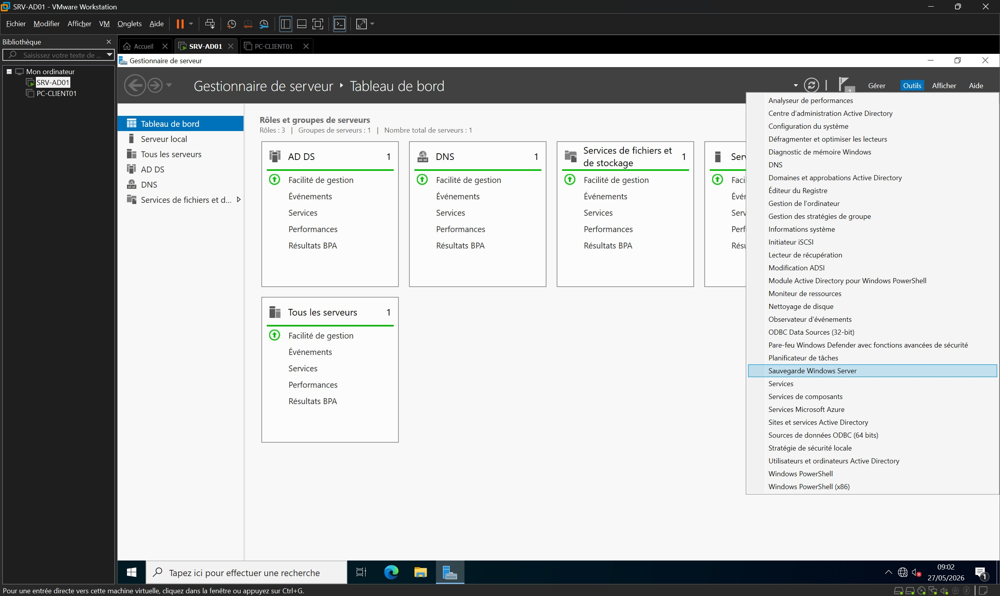
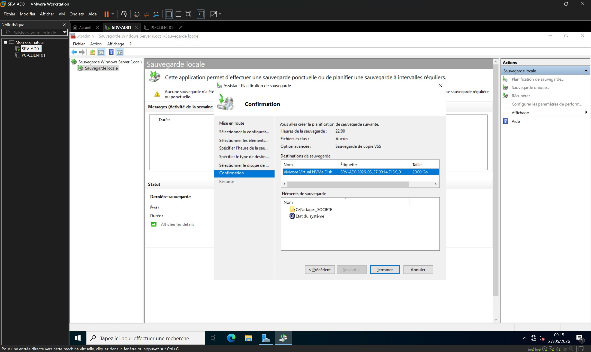
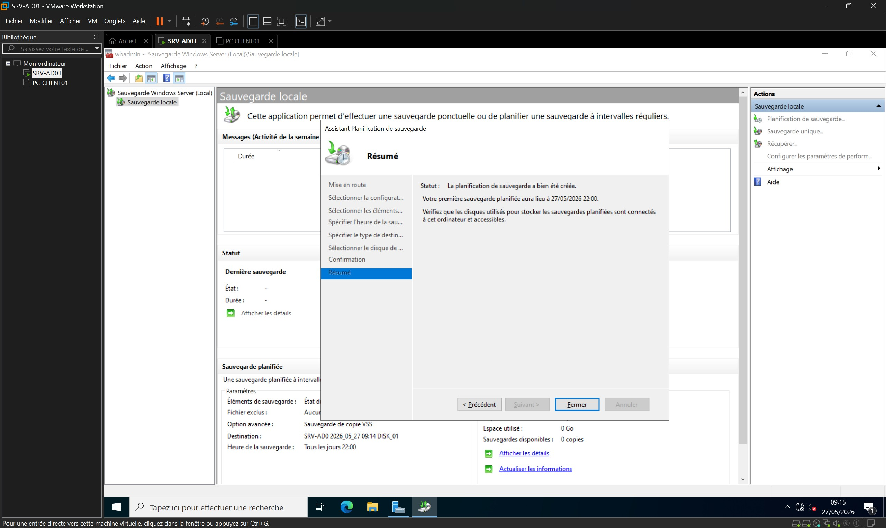
Exécution du test de recette technique et validation
Afin de valider immédiatement la conformité technique de ma configuration sans attendre l'exécution planifiée du soir, j'ai initié un test de recette à chaud.
J'ai forcé le lancement d'une tâche manuelle unique basée sur les paramètres planifiés et j'ai suivi l'avancement jusqu'à l'obtention du statut de réussite général.
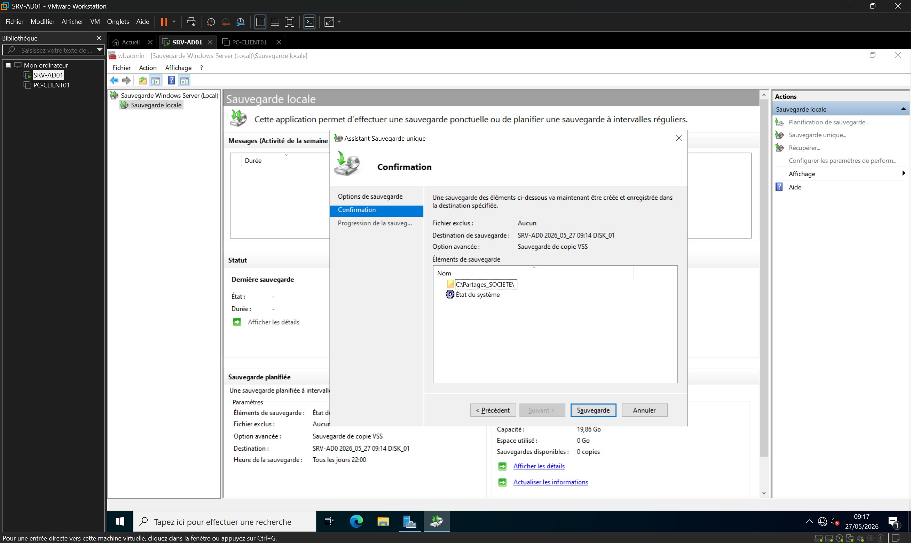
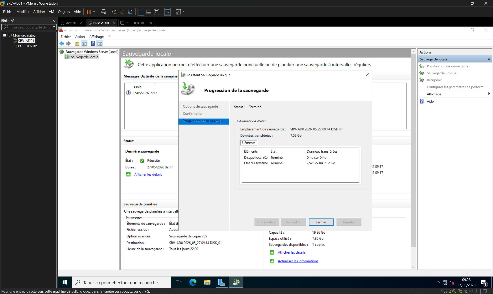
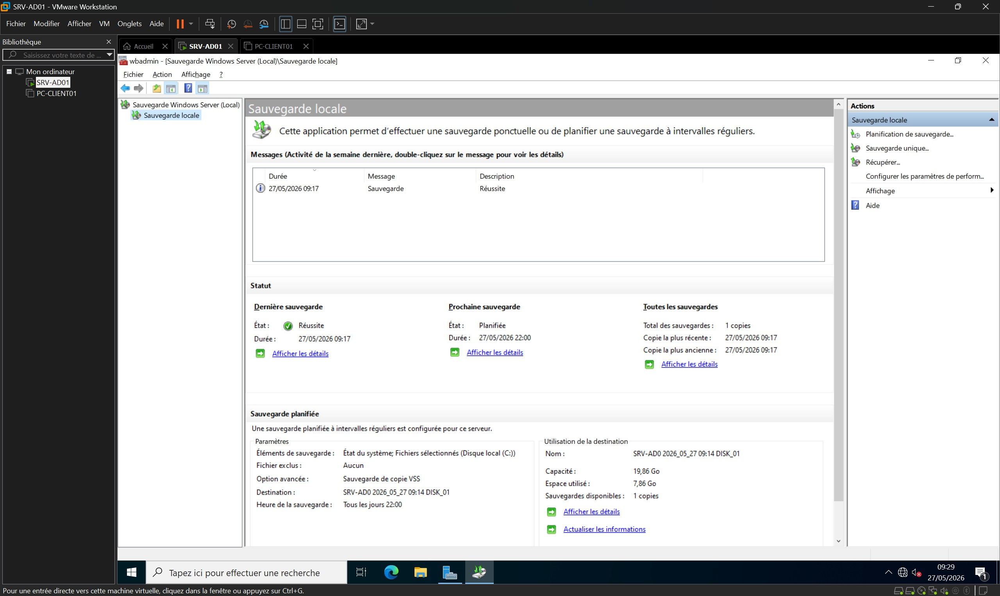
Résultats obtenus et validés
Maquette virtuelle durcie et protégée par l'isolation physique des archives de sauvegarde (Séparation stricte OS / Données / Sauvegardes).
Automatisation et industrialisation complètes de la protection de l'infrastructure Active Directory et du serveur de fichiers.
Maîtrise des protocoles de secours de l'état du système (System State), clé de voûte de l'administration sous Windows Server.
Succès complet de la recette technique validant le Plan de Reprise d'Activité.
Compétences mobilisées
Gérer le patrimoine informatique
Identification des ressources critiques et allocation de disques physiques dédiés aux infrastructures de secours.
Répondre aux incidents et aux demandes d’évolution
Mise en œuvre d'une solution de continuité et de reprise d'activité répondant aux impératifs de sécurité.
Exploiter et sécuriser une infrastructure
Configuration de clichés instantanés (VSS) et automatisation des sauvegardes de bases Active Directory.
Développer la présence en ligne
Documentation technique exhaustive des mécanismes de sécurité et publication sur le portfolio.
Bilan personnel
Cette réalisation a été une opportunité idéale pour aborder la notion cruciale de Plan de Reprise d'Activité (PRA). J'ai compris qu'un déploiement de services d'infrastructure n'est jamais complet sans l'intégration d'une couche de sauvegarde rigoureuse.
La manipulation de clichés instantanés VSS et la sauvegarde de l'état du système (System State) m'ont permis de manipuler les bases complexes de la restauration Active Directory, une compétence fondamentale et rassurante à valoriser en entreprise.